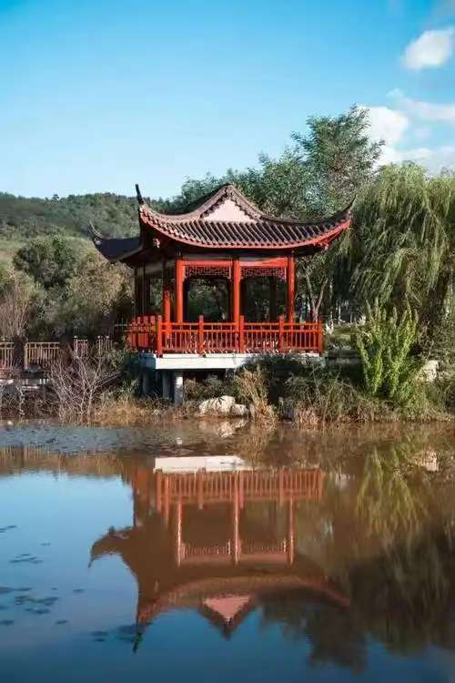

春日的校园，是被春风唤醒的诗行。当第一缕暖阳穿透晨雾，洒在教学楼的琉璃瓦上，整个校园便从沉睡中苏醒。主干道旁的玉兰树率先绽放，洁白的花瓣缀满枝头，像一串串挂在枝头的月光，风一吹，便有细碎的花瓣落在肩头，带着清甜的香气。沿着樱花道漫步，粉白的樱花如云似霞，铺成一条浪漫的花廊，阳光透过花瓣的缝隙，在地面投下斑驳的光影，踩上去仿佛踩碎了一整个春天。人工湖畔的垂柳抽出了嫩黄的新芽，柔软的枝条垂在水面，惊起一圈圈涟漪，湖里的锦鲤在水草间穿梭，偶尔跃出水面，溅起的水珠在阳光下闪着晶莹的光。
操场旁的草坪早已换上了嫩绿的新装，像一块柔软的绒毯铺在天地间，同学们或坐或卧，在草地上读书、聊天、放风筝，风筝乘着春风越飞越高，载着青春的梦想飞向蓝天。图书馆前的海棠花团锦簇，粉的、白的、红的，层层叠叠的花瓣簇拥在一起，像一团团燃烧的云霞，引得蜜蜂在花丛中忙碌穿梭，嗡嗡的声响成了春日里最动听的背景音。就连教学楼的窗台，也被同学们摆上了盆栽，多肉、绿萝、月季，为冰冷的建筑添上了一抹生机。春日的校园，每一处角落都藏着温柔，每一缕风都带着花香，每一个身影都洋溢着青春的活力，这是独属于我们的、最美好的春日时光。
